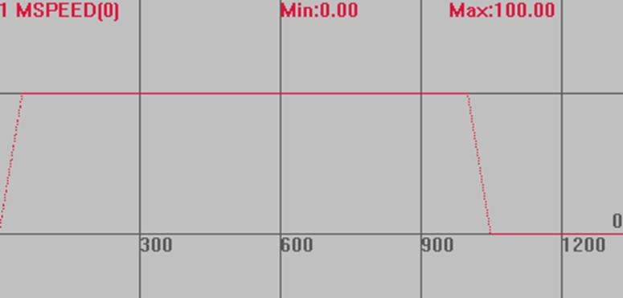
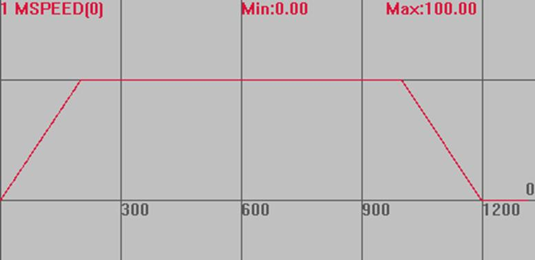

|
类型 |
轴参数 |
|
描述 |
轴加速度，单位为units/s/s。 SPEED速度设100，加速度设1000，加速到100时间为100/1000秒。 当多轴运动时，插补运动的加速度为主轴加速度。 建议运动前设置好加速度和减速度，运动中不要修改，运动中调整会导致速度曲线变化。 |
|
语法 |
可读：VAR1 = ACCEL或VAR1 = ACCEL(轴号) 可写：ACCEL = expression或ACCEL(轴号) = expression |
|
适用控制器 |
通用 |
|
例子 |
例一 BASE(1,2,3,4) 'BASE选择轴 ACCEL=100, 100, 100, 100 '设置轴1，2，3，4的加速度 ACCEL(2)=200 '设置轴2的加速度
例二 BASE(0) UNITS=100 '脉冲当量 DPOS=0 '坐标清0 ACCEL=2000 DECEL=2000 SPEED=100 MOVE(100)
加速过程的速度曲线 MSPEED(0)垂直刻度100 
变更加减速之后的速度曲线 ACCEL=500 DECEL=500  |
|
相关指令 |